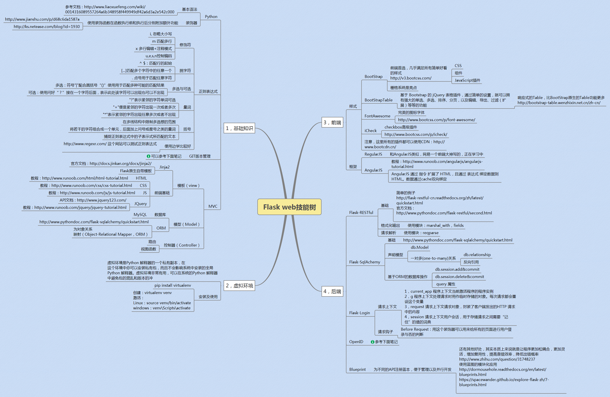
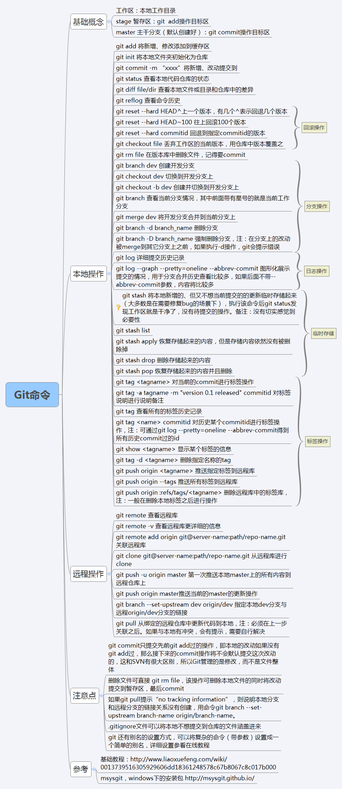

开发异常测试平台的过程中，本人对于Flask Web开发的一些总结，也认为是你的必经之路。
读者有兴趣的话，可以一起玩，愿你们少走弯路。这些你都掌握了，你应该具备了中级前端开发工程师以及中级后端开发工程师的素质。

也稍微了解过一些Django，其实不用太纠结到底学哪个。感觉里面很多都是类似的，比如Flask所用的字符串模板Jinja2就是从Django中扩展而来的，包括都用到的视图路由等概念，用的SQLAlchemy也是flask扩展版本的。而其中的session current_user等都是一样的，使用的是Werkzeug的Request对象。
甚至在我了解到的运维工单系统，框架使用的是Django，然而设计的RESTFul API(占比其中90%的接口)都是用的Flask-RESTFul 扩展。
所以学哪个都可以，希望这个技能树对你有用，我们一起交流提高。都是相通的，大家一起到那种无招胜有招的地步，就是高手啦。
遇见的坑
记不得了，碰见坑一起交流吧。
其他资料
GIT操作
